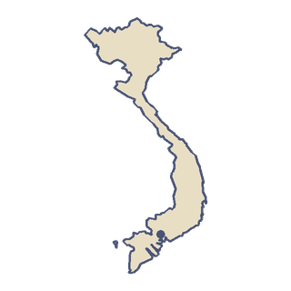
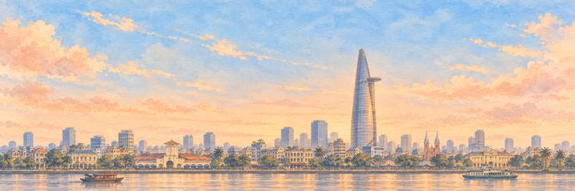
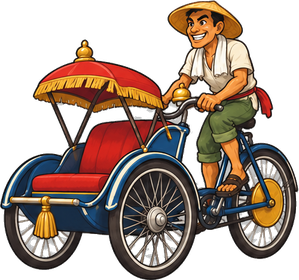

Vietnam
Vietnam adalah negara yang panjang, sempit, dan berbentuk S di tepi timur daratan Asia Tenggara, dengan garis pantai lebih dari 3.000 kilometer. Sawah menutupi dua delta sungainya yang besar, Sungai Merah di utara dan Mekong di selatan. Benderanya merah dengan bintang kuning.
“Aku akan terbang menembus gua itu, di bawah awannya sendiri.”
- Pada Desember 1910 pilot Belgia Charles Van den Born melakukan penerbangan pesawat pertama di Vietnam, dari arena pacuan kuda Saigon.
- Sơn Đoòng, sebuah gua di Vietnam tengah, begitu besar sampai punya hutan dan awannya sendiri di dalamnya.

Bentang alam
Pegunungan menutupi wilayah barat laut Vietnam. Di sana, dekat kota Sa Pa, Fansipan menjulang hingga sekitar 3.147 meter di Pegunungan Hoàng Liên Sơn. Fansipan adalah gunung tertinggi di Semenanjung Indochina, karena itu orang menyebutnya Atap Indochina. Lebih ke selatan, perbukitan Dataran Tinggi Tengah menghasilkan sebagian besar kopi negeri ini.
Transportasi
Sepeda motor adalah cara utama untuk bepergian. Pada 2024, 89,4 persen rumah tangga memakai sepeda motor, tetapi hanya sekitar 9 persen yang memiliki mobil. Rel kereta jalur tunggal sepanjang 1.726 km menghubungkan Hanoi dengan Ho Chi Minh City. Rel ini dibangun pada masa pemerintahan Prancis dan selesai pada 1936. Setelah bertahun-tahun rusak akibat perang, rel ini dibuka kembali pada 31 Desember 1976 sebagai lambang negara yang bersatu. Ho Chi Minh City membuka jalur metro pertamanya pada 22 Desember 2024. Jalur 1 membentang 19,7 km dari Bến Thành sampai Suối Tiên.
Makanan
Vietnam adalah produsen kopi terbesar kedua di dunia, setelah Brasil. Hampir semua kopinya robusta, yang sebagian besar ditanam di provinsi-provinsi Dataran Tinggi Tengah seperti Đắk Lắk, Lâm Đồng, dan Gia Lai.
Musik
Đờn ca tài tử adalah musik kamar dan lagu dari Vietnam selatan. Musik ini tumbuh dari musik istana Huế dan musik rakyat selatan. Musik ini dimainkan di festival, peringatan hari wafat, dan perayaan keluarga. UNESCO memasukkannya ke daftar warisan budaya takbenda dunia pada 5 Desember 2013.
Terbang di atas Vietnam.
-


Kota 16 dari 21Ho Chi Minh City
Pasar Bến Thành
“Jalanan bergemuruh oleh skuter. Di tepi sungai, menara jam memberi tahu bahwa sudah hampir waktunya makan malam.”
Aku akan mendarat di menara jamnya lalu mengikuti aroma sup. Penjaganya adalah Kurir dan Pembalap Becak.
Pesawat tiba di Ho Chi Minh City dari Bangkok.